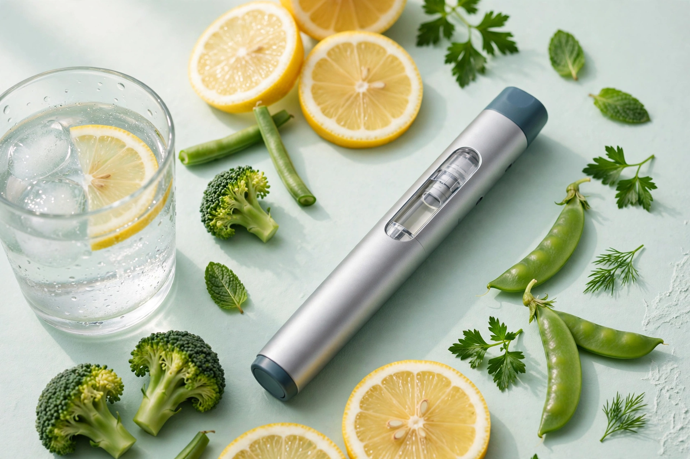
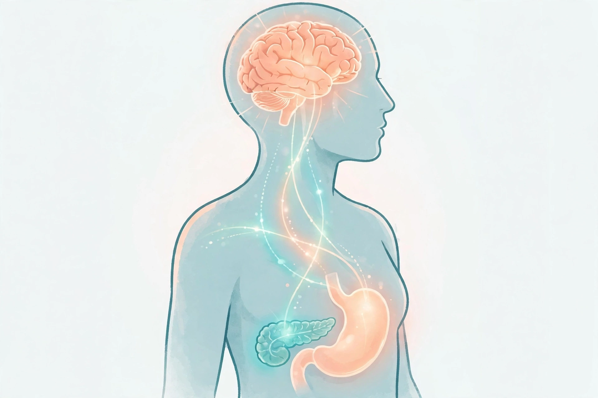

Один из самых обсуждаемых препаратов последних лет — без рекламы и без страшилок. Что это, как работает, кому помогает, а кому нельзя — собрано в одном месте.

Оземпик — торговое имя препарата с действующим веществом семаглутид. Он относится к классу агонистов рецепторов ГПП-1 — то есть подражает работе естественного гормона кишечника, который организм вырабатывает после еды.
Для этого Оземпик и был создан и одобрен: он помогает удерживать сахар крови в целевых пределах у взрослых с диабетом 2 типа, когда диеты, движения и других препаратов недостаточно.
Семаглутид в более высоких дозах выпускается под именем Wegovy и одобрен для лечения ожирения. Поэтому новости «о чудо-уколах для похудения» — про то же вещество, но назначение и дозы определяет врач.
Семаглутид действует сразу в нескольких местах — поэтому эффект шире, чем просто «меньше хочется есть».

ГПП-1 — гормон-почтальон: после еды он докладывает мозгу, поджелудочной железе и желудку, что пора работать слаженно.
Усиливает выработку инсулина именно тогда, когда сахар крови повышен, и приглушает глюкагон — гормон, который сахар поднимает. Поэтому риск резких падений сахара сам по себе невысок.
Замедляет опорожнение желудка: сытость после еды держится дольше, а сахар после приёма пищи поднимается плавнее.
Действует на центры аппетита: многие описывают, что постоянные мысли о еде и тяга к перекусам заметно утихают.
В крупном исследовании у людей с диабетом 2 типа и высоким сердечно-сосудистым риском семаглутид снизил частоту инфарктов, инсультов и смертей от сердечно-сосудистых причин.
Цифры — из клинических программ SUSTAIN (Оземпик при диабете 2 типа). Это средние результаты тысяч участников; у конкретного человека эффект может быть сильнее или слабее.
Один и тот же день недели — вся система. Многие выбирают, например, утро понедельника.
Начинают с малой дозы (0,25 мг раз в неделю) минимум на 4 недели — не для эффекта, а чтобы организм привык. Затем врач обычно поднимает до 0,5 мг, а при необходимости — до 1 или 2 мг. Спешка здесь только усиливает тошноту.
Укол делается шприц-ручкой под кожу живота, бедра или плеча — место можно менять. Не зависит от еды: можно до или после завтрака. Если день пропущен, дозу вводят в течение 5 дней, а дальше — просто в следующий плановый день.
Частые (обычно в первые недели и при повышении дозы, потом утихают): тошнота, рвота, понос или запор, изжога, отрыжка, головная боль, усталость. Помогают маленькие порции, медленная еда и отказ от жирного в дни после укола.
Редкие, но серьёзные — повод срочно обратиться к врачу:
Кому нельзя или нужна особая осторожность: людям, у которых был медуллярный рак щитовидной железы или синдром MEN 2 (у себя или в семье); при тяжёлых заболеваниях желудка (гастропарез); при беременности и её планировании (препарат отменяют заранее — врач скажет срок); при диабете 1 типа Оземпик не применяется. Семаглутид может влиять на всасывание таблеток — в том числе противозачаточных и гормонов щитовидной железы, — поэтому врачу нужно знать обо всех лекарствах.
Препарат — помощник, а не замена привычек: без белка в рационе и движения вместе с жиром уходят мышцы, а после отмены вес часто возвращается.
Это серьёзное рецептурное лекарство от хронического заболевания. Его назначают надолго и под наблюдением, с анализами и контролем.
Дозу поднимают постепенно и только по решению врача: эффект растёт не линейно, а тошнота и риски — вполне.
Покупать семаглутид «с рук» и в сомнительных интернет-магазинах опасно: рынок наводнён подделками. Только аптека и только по рецепту.
Лекарство открывает дверь — дальше всё равно идти ногами: прогулки, белок в тарелке, сон.
Аппетит падает, и легко недоедать белок — а он бережёт мышцы. Рыба, яйца, творог, бобовые; порции меньше, но полноценные.
Ежедневные прогулки и простые упражнения с собственным весом помогают сохранить мышцы и улучшают сахар лучше, чем препарат в одиночку.
Нет. Семаглутид помогает организму вырабатывать собственный инсулин вовремя, но сам инсулином не является.
Сахар обычно улучшается в первые недели; вес уходит постепенно, месяц за месяцем. Полную картину оценивают через 3–6 месяцев.
Игла шприц-ручки очень тонкая; большинство говорит, что укол почти не чувствуется. Медсестра в поликлинике покажет технику на первом приёме.
Официального запрета нет, но алкоголь мешает контролю сахара и усиливает тошноту — этот вопрос честно обсудить с врачом.
Диабет и ожирение — хронические состояния, поэтому лечение обычно длительное. Решение о продолжении или отмене принимают вместе с врачом, а не в одиночку.